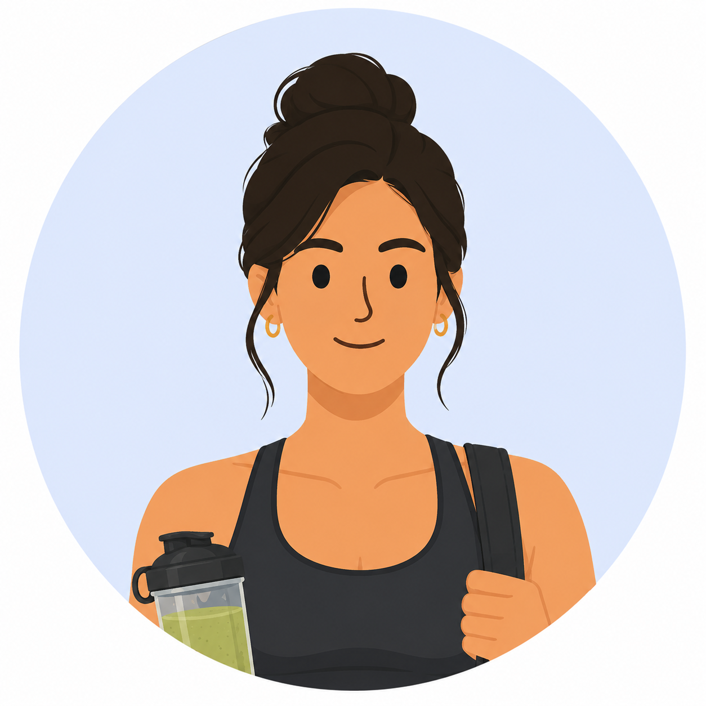
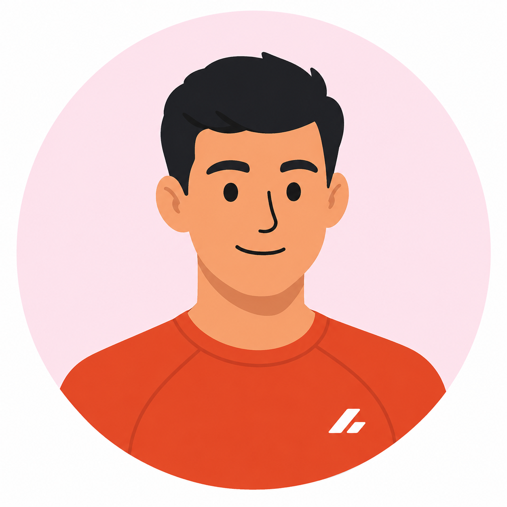

FOOD TECH · B2C · MEAL DELIVERY & SUBSCRIPTION
How do you turn a local and in-store meal service into a nationwide digital journey?
Snap Kitchen is a U.S. meal delivery company specializing in healthy, ready-to-eat meals. Founded in 2010 in Austin, Texas, it originally operated through 33 retail stores across Texas and Philadelphia. As the pandemic accelerated the shift to online purchasing, the company pivoted to a nationwide direct-to-consumer model, expanding its e-commerce operations and home delivery service.
This rapid transition exposed significant limitations in its digital ecosystem. Built for a retail-first business, the platform relied on disconnected third-party tools, leading to duplicated data, fragmented workflows, and inconsistent user experiences. As operations scaled, support requests increased, highlighting the need for a more unified, scalable, and efficient digital platform.

A health-conscious customer who prioritizes performance, recovery, and nutrition. They look for meals with balanced macros, larger portions, and science-backed nutrition to support an active lifestyle.
Pain Points

A busy professional balancing work and personal life who values convenience without sacrificing nutrition. They want chef-prepared meals that fit their schedule and support long-term healthy habits.
Pain Points

A customer who views food as part of overall well-being. They care about ingredient quality, nutrition, flavor, and how meals contribute to both physical and mental wellness.
Pain Points
The Problem
How might we transform a fragmented local meal service into a scalable nationwide ecosystem connecting customers, operations, and logistics?
The process applied to this project followed a holistic approach, rooted in the principles of the Double Diamond and Lean Design. We incorporated the core phases of Discovery, Definition, Ideation, and Implementation — adapting them based on feasibility and timelines. Flexibility was essential to optimize time, prioritize tasks, and focus efforts on the most impactful stages.

To align solutions with both business goals and operational realities, I conducted in-depth interviews and discovery sessions with a wide range of stakeholders — from the CEO and directors to developers, dieticians, customer support agents, and marketing staff. Gathering diverse perspectives helped keep the project user-centric while ensuring feasibility within the organization's operational context.
Following the interviews and contextual inquiries, I analyzed the data to identify recurring patterns. Using affinity mapping, findings were synthesized into three key insight categories: Customer Care, Web Admin Tool, and Third-Party Vendors.
| Area | Activities |
|---|---|
| Stakeholder Interviews | Discovery sessions with the CEO, directors, designers, developers, tech leads, dieticians, customer support, and marketing staff. |
| Heuristic Evaluation | 10 Nielsen Norman Group usability heuristics applied across web and mobile; analysis of support tickets and navigation friction points. |
| User Behavior Analysis | Customer Care support patterns, subscription and login issues, and behavioral data from analytics review. |
| Competitive Analysis | Market positioning, onboarding patterns, personalization models, and loyalty programs in the healthy meal delivery space. |

Through discovery, we uncovered recurring pain points across customer care, platform usability, and internal operations — revealing both the surface-level symptoms and the deeper systemic challenges behind them.
Customer care agents averaged 120 tickets per week, spending considerable time retrieving internal information from disconnected platforms with no unified knowledge base. A small team managed all support channels simultaneously, leading to operational overload.
Opportunity: Unify internal documentation and reduce the manual effort required to answer common customer questions.
Users were required to create and manage different accounts for the website and the mobile app, causing confusion, access issues, and an inconsistent cross-platform experience. Many users asked why separate accounts were even necessary.
Opportunity: Unify login across web and mobile to eliminate friction and simplify account management.
The subscription process lacked clear information architecture and visual guidance. Users frequently reached out just to understand how subscriptions worked, and support requests related to subscription management were among the highest in volume.
Opportunity: Redesign the subscription flow with clear visual cues and structured guidance to reduce confusion and support dependency.
The platform lacked a built-in loyalty system and failed to clearly communicate its unique benefits. Combined with a lengthy and confusing onboarding process, this led to user hesitation, lower engagement, and early drop-off before users experienced the core value.
Opportunity: Introduce a loyalty program and redesign onboarding to surface value early and guide users to their first meaningful moment.
The admin panel required deep system knowledge and lacked documentation, concentrating operational know-how in a few individuals. Promotions required manual execution across disconnected platforms, increasing the risk of errors and slowing down delivery timelines.
Opportunity: Improve admin usability, document workflows, and reduce the manual effort required to run day-to-day operations.
Discovery revealed interconnected problems spanning user experience, operational workflows, and platform infrastructure. By aligning insights with business priorities, we defined five strategic initiatives to improve usability, activation, and long-term scalability.
| Solution | Strategic Opportunity | Stage |
|---|---|---|
| Unified Login | Eliminate separate web and mobile accounts to reduce friction and simplify cross-platform access. | Acquisition |
| Onboarding Redesign | Introduce the Snap Pass loyalty program and guide first-time users through a clearer, more engaging setup flow. | Onboarding |
| Menu Personalization | Surface location-based, dietary-matched meals to increase relevance and drive higher meal selection engagement. | Activation |
| Subscription Flow Clarity | Redesign plan selection with visual guidance and a clear information architecture to reduce support volume. | Adoption |
| Admin Tool Improvements | Improve usability, document workflows, and reduce the manual overhead required for day-to-day operations. | Efficiency |
New onboarding flows were designed to support first-time users entering the platform, introducing the Snap Pass loyalty program and offering 5% off on every subscription. Visual guidance was introduced to clearly explain how subscriptions work and what users can expect — reducing early drop-off and building confidence from the first interaction.
Goals


Based on the user's address, a personalized menu is shown featuring meals available in their area. The menu was thoughtfully designed and categorized to match the user's dietary needs and preferences — making meal discovery faster, more relevant, and more engaging for both new and returning customers.
Goals

To keep design and development fully aligned, all UX deliverables, such as user flows, wireframes, UI screens, and interaction logic, were documented in Confluence. Design decisions were translated into clear user stories and acceptance criteria, serving as a single and up-to-date source of truth during implementation.
This clear and well-structured documentation helped streamline the handoff process and enabled the development team to work more efficiently. It gave the team full visibility into priorities, technical requirements, and expected outcomes.
Throughout the handoff phase, I remained actively involved to ensure alignment and execution by:
Reduced manual work in meal and receipt registration, streamlining internal workflows across teams.
Onboarding flows introduced Snap Pass to first-time users, creating a foundation for long-term customer retention.
Single login across web and mobile, personalized menus, and a redesigned subscription flow simplified the end-to-end customer journey.
A solid discovery phase helped find the real problems behind user pain points and brought the team together around a shared direction. Collaborating early with customer care, marketing, developers, and other teams revealed that many UX issues were caused by internal processes — not just surface-level UI problems.
By thinking in systems and connecting people, processes, and technology, we were able to align both customer-facing and internal tools — improving usability and operational efficiency at the same time, rather than solving them in isolation.
Mapping and improving admin and operational tools were essential for boosting agility and informing how new flows were designed. A better internal experience directly enabled a better customer experience.